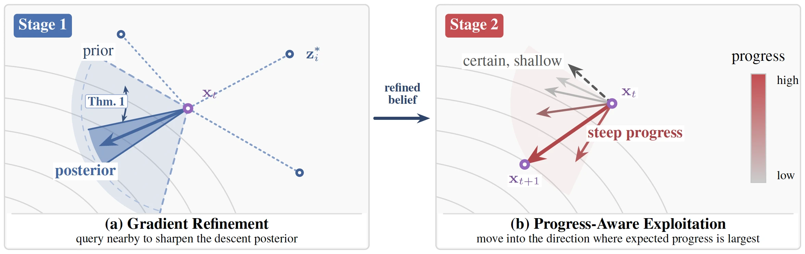
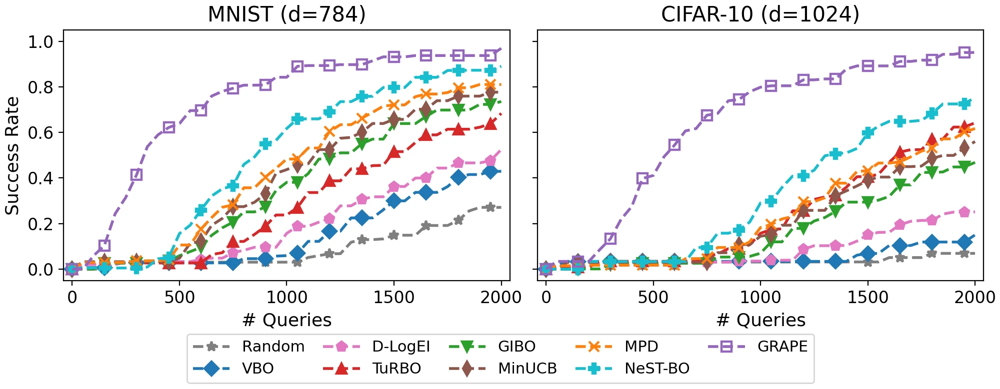
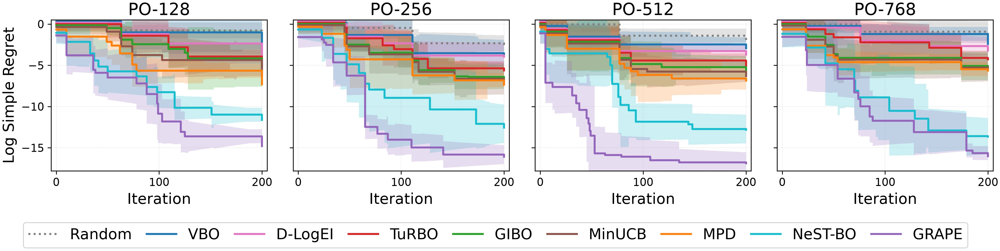

Preprint, 2026
GRAPE: Gradient Refinement and Progress-Aware Exploitation for Query-Efficient High-Dimensional Bayesian Optimization
TL;DR. Local Bayesian optimization often takes tiny steps that are almost sure to descend, since it ranks directions by descent probability instead of the size of the decrease. GRAPE first sharpens the local gradient posterior, then moves in the direction with the largest expected decrease, giving a 5.4x speedup on black-box adversarial attacks and 3.8 log-units better regret on LLM prompt optimization.
Abstract
Optimizing expensive, high-dimensional black-box functions remains a central challenge in modern machine learning and scientific discovery. While local Bayesian optimization mitigates the curse of dimensionality, existing techniques often prioritize the probability of descent over the magnitude of progress. This leads to overly conservative steps that yield negligible improvement, wasting queries on directions that are nearly certain to descend but offer little decrease. We introduce Gradient Refinement and Progress-Aware Exploitation (GRAPE), a two-stage framework that first sharpens the local gradient posterior via a closed-form acquisition function, then selects update directions by maximizing the expected decrease conditional on descent. Theoretical analysis proves that this gradient refinement stage monotonically minimizes local uncertainty and that the progress-aware direction converges to true steepest descent as the posterior sharpens. Empirically, GRAPE demonstrates superior query efficiency across high-dimensional tasks: in black-box adversarial attacks, it achieves an average 5.4x speedup over baselines, and on large language model prompt optimization tasks, it outperforms the second best method by a reduction of 3.8 log-units in the final average regret.
Gradient Refinement and Progress-Aware Exploitation
GRAPE targets local optimization of an expensive black-box function whose gradient is never observed directly. A Gaussian process (GP) posterior on the objective induces a joint posterior over the gradient at the current point1, which recent local BO methods exploit without ever querying a true gradient: GIBO reduces gradient uncertainty before stepping along the posterior mean2, MinUCB minimizes a local upper confidence bound3, and NeST-BO targets a modified Newton step from joint gradient and Hessian posteriors4. Most closely related, MPD picks the direction that maximizes the posterior probability of descent5, a criterion invariant to rescaling the mean and standard deviation together: directional posteriors (−2, 1) and (−0.2, 0.1) share the same 0.977 descent probability, yet their expected decrease differs by an order of magnitude. Maximizing descent probability alone therefore favors safe but shallow directions over ones that offer far more progress.

Figure 1. One outer iteration of GRAPE. (a) Nearby queries sharpen a wide prior descent belief into a narrower posterior. (b) Candidate directions are ranked by expected progress, and GRAPE moves along the direction with the largest expected decrease rather than the most certain but shallow one.
Progress-aware exploitation. GRAPE replaces descent probability with the expected decrease conditional on descent, P(v) = σv [φ(γv) / Φ(−γv) − γv] for standardized directional mean γv, and selects the direction that maximizes it via projected gradient ascent with random restarts. The score recovers the posterior mean slope once a direction is certain to descend, correctly scores a certain-ascent direction as zero, and falls back on posterior variance as implicit exploration while the gradient posterior is still diffuse, properties that descent probability and the unconditional expected decrease both lack.
Gradient refinement. This score is only as reliable as the gradient posterior behind it, so before moving, GRAPE spends a short budget of auxiliary queries that greedily minimize the expected one-step gradient variance at the current point, a quantity with closed form under a GP. Repeatedly querying its maximizer is provably never harmful: it monotonically minimizes the total gradient uncertainty at the current iterate.
- Initialize with a small batch of random queries and fit a GP.
- Stage 1 (refine): sequentially select a fixed number of refinement queries by maximizing the gradient-refinement acquisition, refitting the GP after each.
- Stage 2 (exploit): repeatedly take a fixed-size step along the progress-maximizing direction, evaluating and adding each point before recomputing the next direction; stop early once the progress score falls below a threshold.
- Repeat for a fixed number of outer iterations and return the best point observed.
Two results support this design: gradient refinement is shown to monotonically minimize local gradient uncertainty, and as the posterior sharpens, the progress-aware direction converges to the true steepest-descent directiona. Together they position GRAPE as a principled approximation to first-order local optimization.
Experiments
All GP-based methods share one modeling protocol: an ARD Matérn-5/2 kernel fit by maximum marginal likelihood, matched initial points, and matched evaluation budgets. Baselines span random search, global BO with expected improvement6 (VBO) and a dimension-scaled prior7 (D-LogEI), the trust-region method TuRBO8, the local first-order methods MPD5, GIBO2, and MinUCB3, and the second-order method NeST-BO4. GRAPE refines for 5 queries per outer iteration, exploits for at most 30 steps with early stopping, and takes a fixed-fraction step size.
Black-Box Adversarial Attacks
Adversarial attacks test whether a small, visually inconspicuous perturbation can cause an otherwise accurate classifier to misclassify an image, using only black-box access to its logits9. Following prior query-efficient attacks10, images are drawn from MNIST (d = 784)11 and a ResNet-1812 on CIFAR-10 (d = 1024)13, and an attack succeeds at the first query where a Carlini-Wagner margin loss turns negative. GRAPE finds a successful attack with far fewer queries than every baseline, and all pairwise comparisons are significant under a paired Wilcoxon test14 (p < 0.05): on CIFAR-10, VBO and random search need 7.5x and 9.4x as many queries, and the closest competitor, NeST-BO, still needs 3.3x more on both datasets. The gap is largest on CIFAR-10, where richer image structure leaves the gradient posterior more uncertain, so gradient refinement gives a bigger relative benefit.

Figure 2. Attack success rate (higher is better) versus number of queries on 50 randomly selected images from MNIST (d = 784) and CIFAR-10 (d = 1024).
LLM Prompt Optimization
Prompt optimization for large language models combines expensive evaluations with a discrete, high-dimensional search space15. GRAPE is evaluated on the BoLT benchmark16 (5,014 prompts scored by MATH-500 accuracy17 under Qwen3-14B18), with each prompt embedded via EmbeddingGemma19 at four Matryoshka truncations20 (d ∈ {128, 256, 512, 768}), giving tasks PO-128 through PO-768. Continuous proposals are projected to the nearest embedding in the discrete pool before evaluation, and performance is measured by log simple regret (lower is better).

Figure 3. Log simple regret (lower is better) versus BO iteration on BoLT prompt-optimization tasks PO-128 through PO-768. Shaded regions denote one standard deviation over 10 seeds.
Global methods and random search plateau early and get relatively worse as dimension grows, matching BoLT's own finding that standard BO becomes nearly indistinguishable from random search at these dimensions16. First-order local methods and TuRBO reach a mid-tier plateau. Only GRAPE and NeST-BO reach the deep low-regret region, with GRAPE finishing lowest at every dimension and the gap widening with d: from roughly tied at d = 128 to about 3.8 additional log-units of improvement at d = 768, reflecting NeST-BO's harder-to-learn d × d Hessian posterior versus GRAPE's first-order one.
Ablation Study
To separate the two design choices, four variants are compared on MNIST and PO-128/PO-768: plain MPD, MPD-Refine (refinement paired with MPD's exploitation), GRAPE-RandExp (random refinement paired with progress-aware exploitation), and full GRAPE.
| Variant | MNIST (# queries ↓) | PO-128 (regret ↓) | PO-768 (regret ↓) |
|---|---|---|---|
| MPD (baseline) | 827 ± 128 | -7.1 ± 1.2 | -5.9 ± 1.4 |
| MPD-Refine | 741 ± 119 | -7.8 ± 1.3 | -6.6 ± 1.5 |
| GRAPE-RandExp | 371 ± 68 | -11.8 ± 1.6 | -12.6 ± 1.7 |
| GRAPE (full) | 216 ± 42 | -13.9 ± 1.3 | -15.7 ± 1.5 |
Table 1. Ablation of gradient refinement versus progress-aware exploitation (mean ± std over 10 runs). Lower is better on both metrics.
MPD-Refine improves only modestly over plain MPD, confirming that refinement alone does not reliably help a descent-probability rule5. GRAPE-RandExp closes most of the gap to full GRAPE, showing the exploitation criterion is the more impactful design choice; adding refinement on top still yields a smaller, consistent further gain.
Open Question
Local BO often takes steps that are almost sure to descend even when the drop is tiny, so GRAPE first sharpens the local gradient and then moves in the direction with the largest expected decrease. Classical analyses track the chance of descent, so deriving how fast those sharpened steps compound, and a rate of convergence for the overall search, remains open.
Citation
@article{suwandi2026grape,
title = {GRAPE: Gradient Refinement and Progress-Aware Exploitation for
Query-Efficient High-Dimensional Bayesian Optimization},
author = {Suwandi, Richard Cornelius and Yin, Feng},
journal = {Preprint},
year = {2026}
}Footnotes
- GRAPE's per-iteration overhead (GP refits plus scoring the refinement acquisition and progress-aware direction) sits close to other first-order local methods like GIBO and MPD, and well below NeST-BO's joint gradient-Hessian updates. On MNIST it also finishes fastest in total wall-clock time because it succeeds with far fewer queries. The paper reports query efficiency, not wall-clock time, as the primary metric. [↩]
References
- Gaussian Processes for Machine Learning [PDF]
Rasmussen, C.E. and Williams, C.K.I., 2006. MIT Press. - Local Policy Search with Bayesian Optimization
Müller, S., von Rohr, A. and Trimpe, S., 2021. Advances in Neural Information Processing Systems. - Minimizing UCB: A Better Local Search Strategy in Local Bayesian Optimization
Fan, Z., Wang, W., Ng, S.H. and Hu, Q., 2024. Advances in Neural Information Processing Systems. - NeST-BO: Fast Local Bayesian Optimization via Newton-Step Targeting of Gradient and Hessian Information
Tang, W.T., Kudva, A. and Paulson, J.A., 2026. International Conference on Artificial Intelligence and Statistics. - Local Bayesian Optimization via Maximizing Probability of Descent
Nguyen, Q., Wu, K., Gardner, J. and Garnett, R., 2022. Advances in Neural Information Processing Systems. - Efficient Global Optimization of Expensive Black-Box Functions
Jones, D.R., Schonlau, M. and Welch, W.J., 1998. Journal of Global Optimization. - Vanilla Bayesian Optimization Performs Great in High Dimensions
Hvarfner, C., Hellsten, E.O. and Nardi, L., 2024. International Conference on Machine Learning. - Scalable Global Optimization via Local Bayesian Optimization
Eriksson, D., Pearce, M., Gardner, J., Turner, R.D. and Poloczek, M., 2019. Advances in Neural Information Processing Systems. - BayesOpt Adversarial Attack
Ru, B., Cobb, A.D., Blaas, A. and Gal, Y., 2020. International Conference on Learning Representations. - On the Convergence of Prior-Guided Zeroth-Order Optimization Algorithms
Cheng, S., Wu, G. and Zhu, J., 2021. Advances in Neural Information Processing Systems. - Gradient-Based Learning Applied to Document Recognition
LeCun, Y., Bottou, L., Bengio, Y. and Haffner, P., 1998. Proceedings of the IEEE. - Deep Residual Learning for Image Recognition
He, K., Zhang, X., Ren, S. and Sun, J., 2016. IEEE Conference on Computer Vision and Pattern Recognition. - Learning Multiple Layers of Features from Tiny Images
Krizhevsky, A. and Hinton, G., 2009. University of Toronto. - Individual Comparisons by Ranking Methods
Wilcoxon, F., 1945. Biometrics Bulletin. DOI: 10.2307/3001968 - Large Language Models Are Human-Level Prompt Engineers
Zhou, Y., Muresanu, A.I., Han, Z., Paster, K., Pitis, S., Chan, H. and Ba, J., 2023. International Conference on Learning Representations. - BoLT: A Benchmark to Democratize Black-box Optimization Research for Expensive LLM Tasks [arXiv]
Chew, R.W.T., Chen, Z., Hemachandra, A. and Low, B.K.H., 2026. arXiv:2605.17000. - Measuring Mathematical Problem Solving with the MATH Dataset
Hendrycks, D., Burns, C., Kadavath, S., Arora, A., Basart, S., Tang, E., Song, D. and Steinhardt, J., 2021. NeurIPS Datasets and Benchmarks Track. - Qwen3 Technical Report [arXiv]
Yang, A. et al., 2025. arXiv:2505.09388. - EmbeddingGemma: Powerful and Lightweight Text Representations [arXiv]
Schechter Vera, H. et al., 2025. arXiv:2509.20354. - Matryoshka Representation Learning
Kusupati, A., Bhatt, G., Rege, A., Wallingford, M., Sinha, A., Ramanujan, V., Howard-Snyder, W., Chen, K., Kakade, S., Jain, P. and Farhadi, A., 2022. Advances in Neural Information Processing Systems.